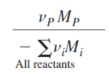
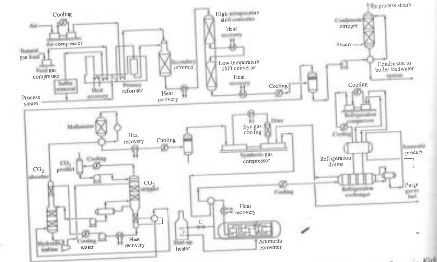
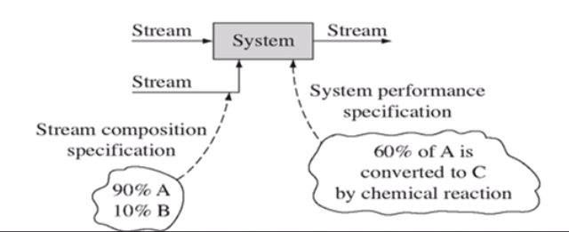
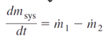
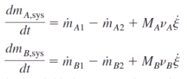
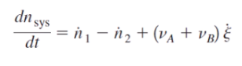
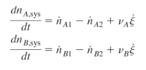
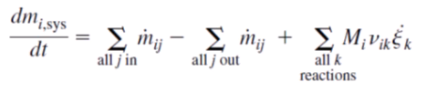
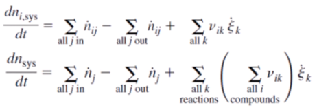

화학공정계산 (murphy) 1~3장
화학공정계산은 Felder의 책이 유명하지만 내용적으로 보았을 때, 개인적으로 murphy의 책을 추천한다. murphy의 책은 고학년에 배우는 내용까지도 담고 있어 여러번 보기 좋은 느낌이다.
1장: 유용한 생산물을 만들기 위한 자원의 전환
모든 책의 서장이 그러하듯 별 내용은 없다.
화학반응 계수 맞추기: 쉽다.
원자경제성: 반응물의 질량대비 생성물의 질량

공정경제성: 생성물의 가격-반응물의 가격
2장:공정 흐름- 변수, 공정도, 수지식, 규격, 자유도, 간편추론법, 근사
이 장에서는 공정변수, 공정흐름도, 물질 수지식, basis, stream composition specification, system performance specification, Degree of freedom에 대해 알아본다.
공정변수:몰 유량, 질량, 조성, 농도, 압력, 온도, 부피, 밀도 등 컨트롤할 수 있는 것들
공정흐름도: 보통 PFD가 많이 쓰인다.

물질수지식:유입량-유출량+생성량-소비량=축적량
basis:하나의 흐름의 유량. 이걸 정하면 나머지는 balance로 구할 수 있으므로 이걸 기준이라고 부른다.
규격: 매우 중요한 두 종류의 규격이 있다.
stream composition specification: 흐름의 조성, 유량을 나타내는 정보
system performance specification: 시스템에서 일어나는 변화에 대한 정보

자유도 분석: 문제를 풀 때 적절한 정보가 주어지지 않으면 문제를 풀 수 없다. 따라서 규정이 되어야 한다.
자유도=독립변수-독립방정식, 이것이 0이 되어야 문제가 규정된 것이다.
블록흐름선도의 합성:
간편추론법
1.각 화학반응마다 반응기를 하나씩 그린다.
2.반응기 앞에 mixer를 설치한다.
3.반응기를 거친 후에는 분리기를 거친다. 경우에 따라 믹서 전에도 분리기를 설치할 수 있다.
4.흐름의 양이 너무 많으면 분할기로 나눠준다.
5.가능하면 분리보단 분할이 좋다.
6.부산물, 폐기물은 즉시 제거한다.
7.반응기 유입 전에 원료물질을 혼합한다.
근사: 반응에서 복잡함을 줄이기 위해 3가지 근사를 쓴다.
흐름 조성 근사
계 성능 근사
물성 근사
3장:물질 수지식의 수학적 분석 및 공정흐름도-
2장에서 배운 내용을 조금 더 자세하게 배우는 것이다.
질량보존법칙과 물질수지식의 관계
물질수지식:유입량-유출량+생성량-소비량=축적량
질량에 관한 수지식


몰수에 관한 수지식
 
일반적인 형태
 
여기까진 그냥 수지식에 관한 내용이라.. 계산만 잘한다면 쉬운 부분이다.